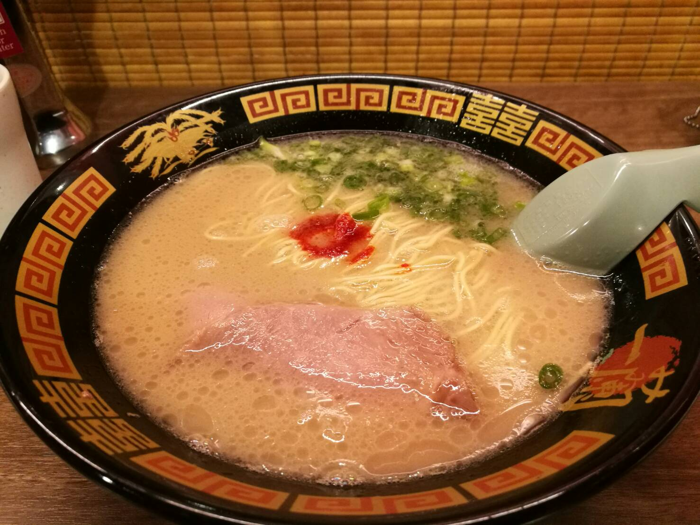
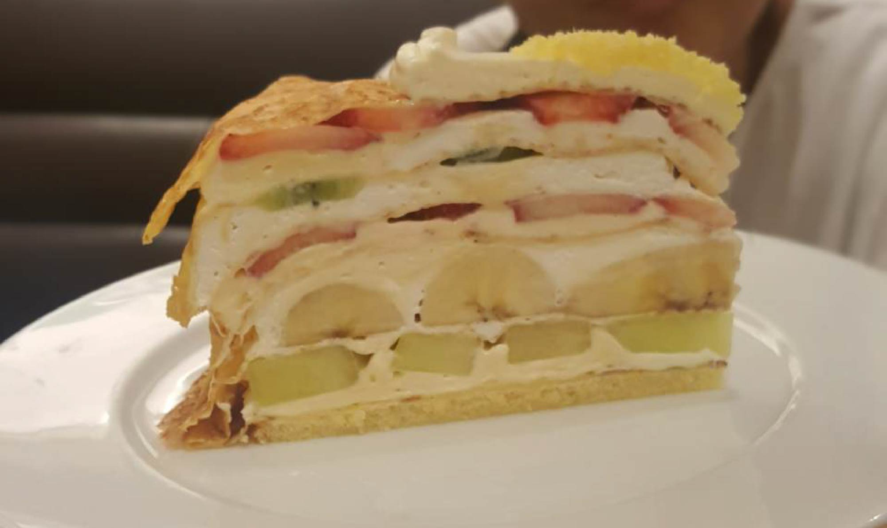
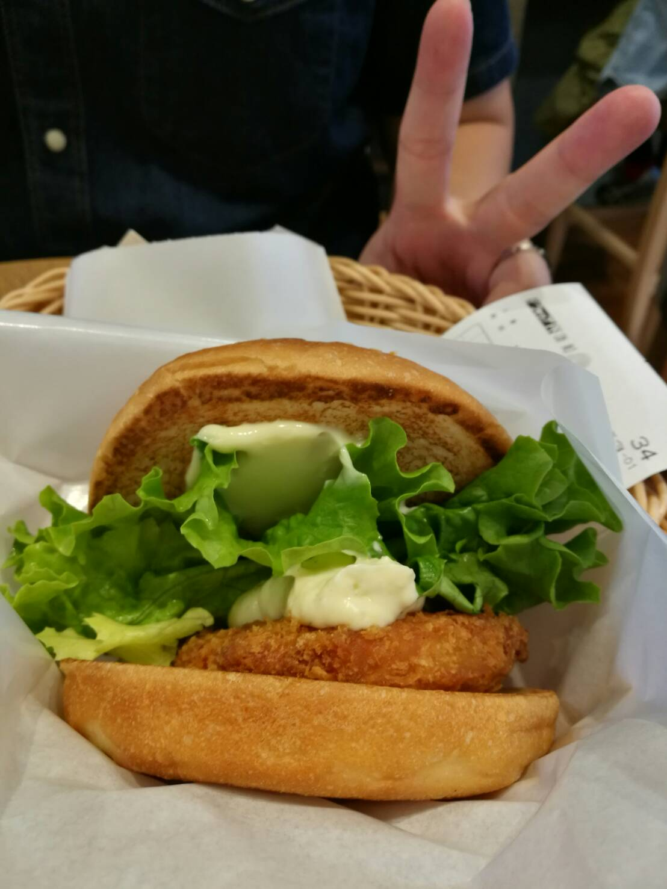

5 favourite food places in Tokyo: the food chain edition
I love travelling to the land of the rising sun! There’s so many food options there and so much delicious food. Here are 5 of the food chains I will surely make a point to head whenever I am there. Here are my top 5 favourite places to visit whenever I head to Tokyo!
1 // Coco Ichibanya (Coco Curry)

I don’t think I can say enough how much I love Coco-Ichibanya. I lovvveeee the fact that the whole curry can be customized down to a tee to be exactly how I like it! Also, they serve a really good handmade katsu. Though its slightly pricier, its really really good. Be sure to order that when you’re there! Fun Fact: I really their MANGO LASSI as well! Be sure to check that out when you’re there! Also, Simon and Martina did a really video on coco curry if you’re looking for more information.VIDEO HERE.
2// Ichiran Ramen
I am not a giant Ramen fan but this ramen chain I love. The husband who is a ramen fan loves it as well. In recent years though, this chain has gotten really popular with tourists and now at some branches there’s a queue 😦 BUT FOOD IS STILL GOOD! Also, this Ramen is customizable as well (things in Japan are so awesomely customizable) plus plus its open 24 hours! I usually use google maps to locate the nearest Ichiran branch from where I’m staying and head there for dinner/supper. Fun Tip: The matcha almond pudding is really good as well! Order that for dessert if you visit!
3// Harbs
HARBS. Their fruit mille fille crepe is like my favourite. I love mille crepe and look at the number of fruits!!! This is a sweet tooth place though so if you don’t really have a sweet tooth maybe you should give it a miss. Fun Tip: Recently when we headed over we realised that the serve set lunches which included a pasta, a drink and half a serving of cake! This place is not really considered cheap but with the lunch set I would say it is more value for money! To check on the abvailable branches click HERE.
4// Macdonalds
Okay I don’t have images of this but I really like the Macdonalds in Tokyo (most of the time it goes right into my tummy). I especially like their hotcakes- it’s light and fluffy and the butter that they serve it with is just heavenly. So check this out when you’re there!
5// Freshness Burger
This burger chain has really yummy food. I especially enjoy 3 items on the menu- the SPAM burger, the fish burger and the onion rings. I always make it a point to check out this place when I am in Tokyo! The food seems fresh and the onion rings are actual onion rings and not the mushy kind (if you know what I mean).Writing this makes me miss Tokyo. Hurhur.